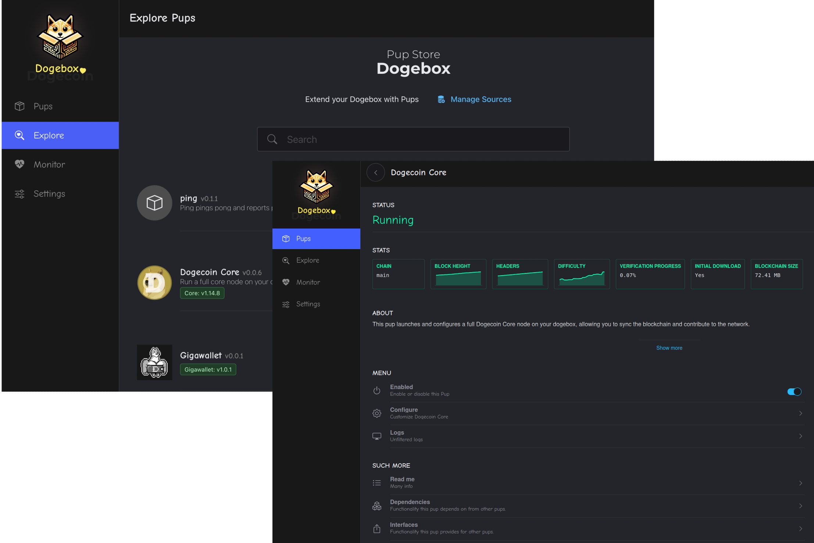
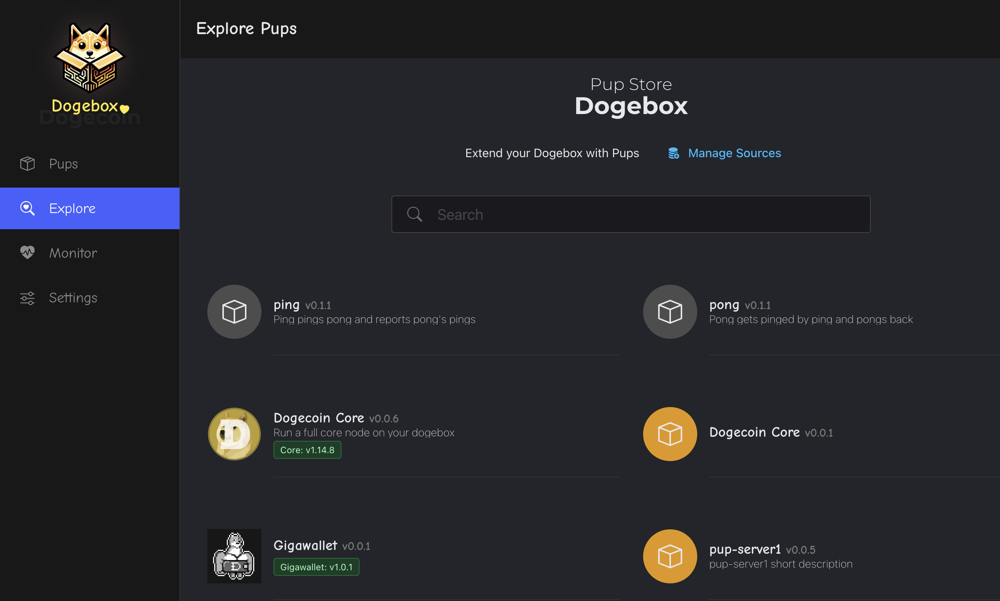
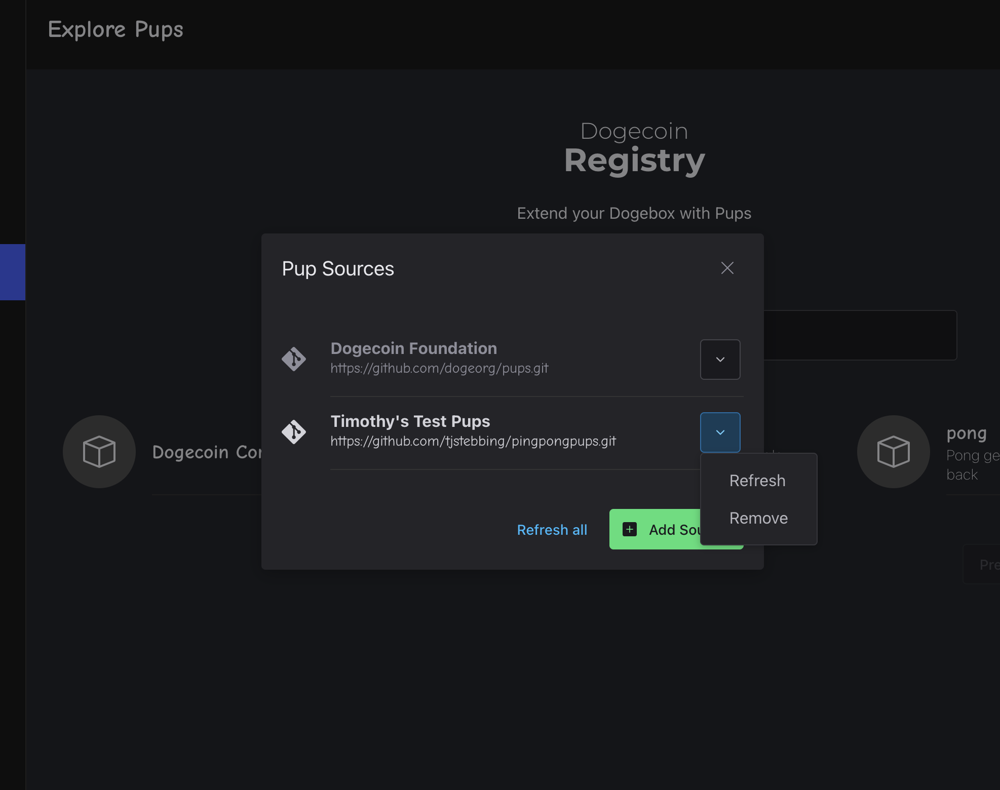
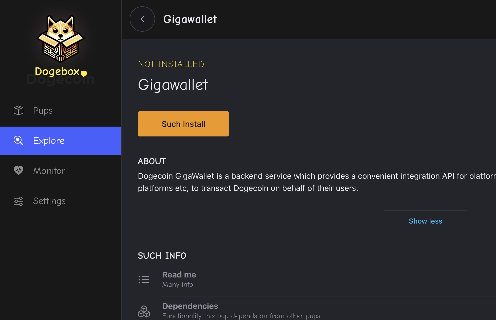
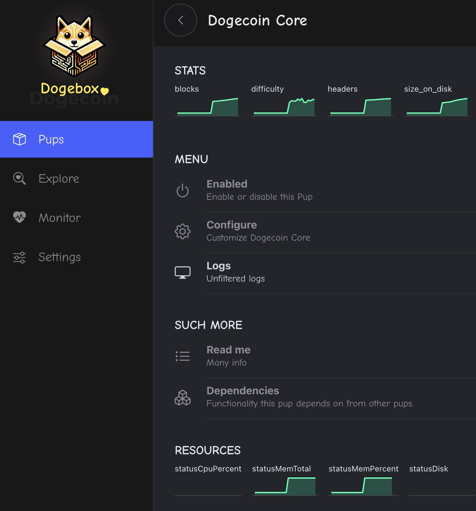
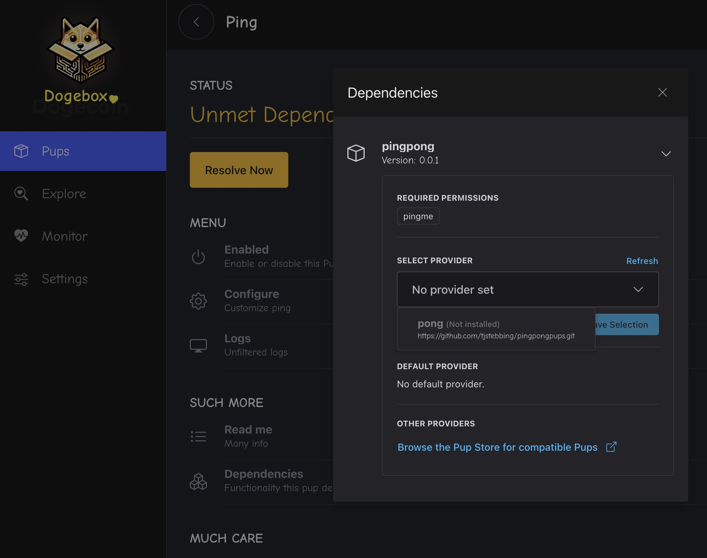
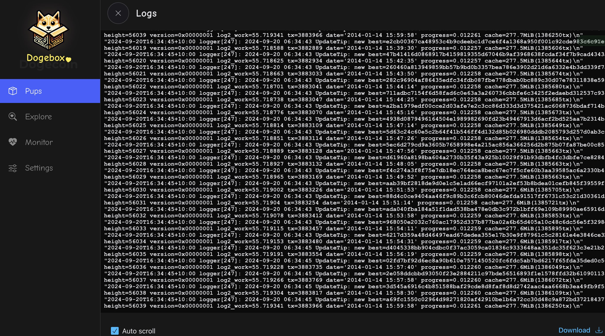

Installing PUPs
Pups are the lifeblood of the Dogebox, these are packaged services that the Dogebox runs inside an isolated container, they can depend on other Pups such as Dogecoin Core or GigaWallet, and thus build up a functional Dogecoin ecosystem that can provide online shopping, tipping, new wallets or anything else that interacts with the Dogecoin Blockchain.

Explore - The Pup Store
Clicking the 'Explore' link in the nav will take you to the 'Pup Store' where all available Pups can be found.
⚠️ Note: To start with you will only see a few Pups provided by the Dogecoin Foundation supported 'Pup Source', such as Dogecoin Core, Dogecoin GigaWallet, Dogenet and a few others. More Pups can be added to the store by adding new 'Pup Sources' (see below).

Pup Sources - Where do pups come from?
Dogebox is designed to let the community create and distribute Pups without any centralised group controlling a 'store' (hint: like Google or Apple!).
From the Pup Store you can 'manage sources', and paste in a URI to a different Pup source form the internet. This will be scanned and any pups found will be available in the Pup Store.
⚠️ Note: currently Sources are Git repositories that follow a particular format, however we are working on other Source types such as decentralised Radicle sources, http and others.

Pup Installation
Clicking a pup from the Pup Store will let you install the Pup. Dogebox will prepare an isolated 'container' for your Pup to run in, and assign any resources that your Pup needs based on it's config.
⚠️ Note: This may take some time as Dogebox will download the source-code for the software and compile it on your Dogebox. Dogecoin Core may take 10 minutes or more depending on your hardware. Grab a cuppa and chill.

Pup Management Screen
The pup management screen exists for every installed pup, and is the main control panel for interacting with the software. From here you can monitor the general Stats of the container, view any custom Mertrics or Logs, and launch the Pup's own UI (if it provides one!)

Meeting Dependencies
Some pups depend on other pups, they do this via 'Interfaces' and 'Providers'. A pup
that requires an interface provider will let you know by entering the Unmet Dependencies
state.
At this point you will need to install or select a pup that 'provides' the required interface. Don't worry, there's a helpful dialog to get you through this step.

Enabling / Disabling Pups
From the Pup management screen, you can use the 'Enabled' slider to enable or disable a pup.
⚠️ Note: this may take a little time as Dogebox is managing interconnected services related to this Pup, opening or closing firewall ports and updating it's internal routes.
Reading Logs
For the more technically minded, you can click the 'Logs' action under the Pup management screen to see the output of the Pup in realtime.
